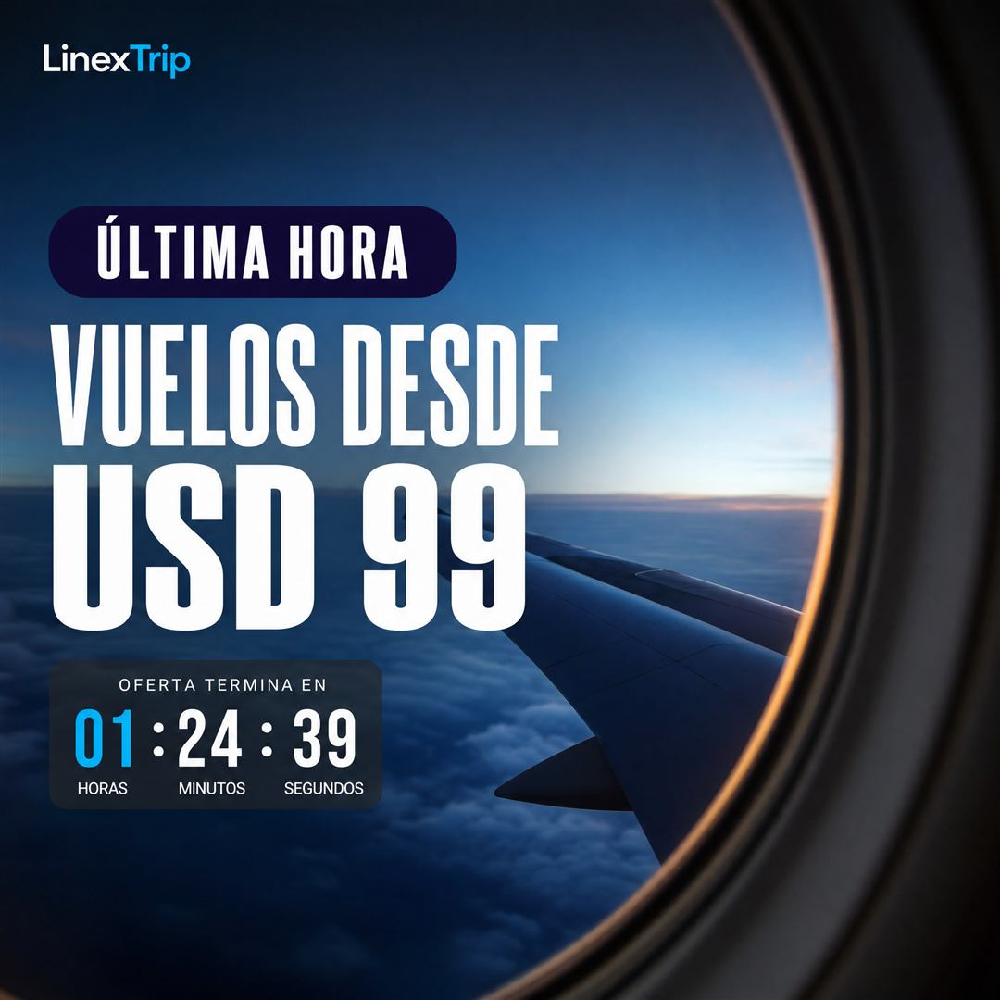
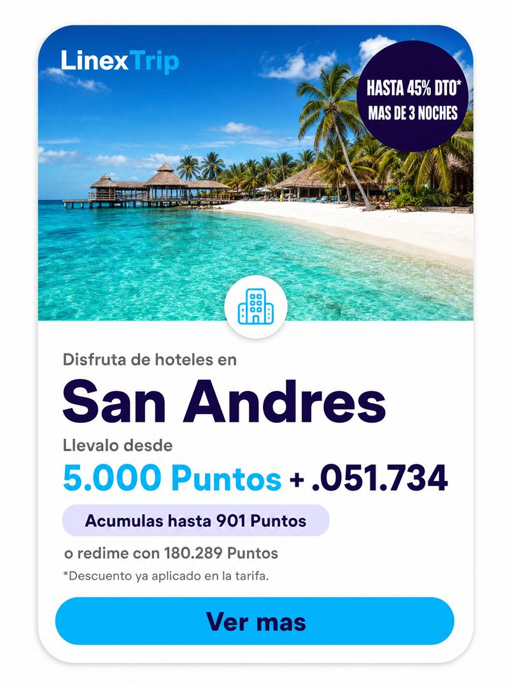
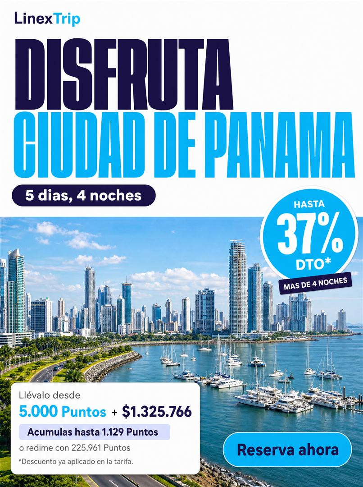

15Redes socialesSocial media
Lo que ya funciona en redes, y cómo pedirlo con IA sin perder la marca
Lenguaje gráfico literal observado en 15 referencias entregadas por el dueño de marca (posts de una aerolínea aliada), formatos de pieza para redes sociales, y una plantilla de prompt reutilizable para generación de imagen con IA (Higgsfield, kie.ai u otras herramientas externas que el dueño de marca conecta por su cuenta, fuera de este proyecto).
Lenguaje gráfico observado en 15 referencias
13 de las 15 referencias entregadas muestran contenido y marca de una aerolínea aliada (Arajet: logotipo, nombre, avión rotulado con su librea). Se toman aquí únicamente como referencia de lenguaje gráfico y de formato — ningún elemento de su marca (logo, nombre, HEX exacto) debe reproducirse literalmente en una pieza de Linex Trip.
Formatos de redes sociales
| Formato | Tamaño |
|---|---|
| Feed post | 1080×1350px (4:5) |
| Story / Reel cover | 1080×1920px (9:16) |
| Carrusel | 1080×1350px, 3–10 slides |
| Portada Facebook | 1200×630px |
| Avatar / perfil | 500×500px (círculo) |
Zona segura: sin texto en el tercio inferior de story/reel (lo cubre la UI de la plataforma). El indicador “n/N” va siempre visible en la esquina superior de un carrusel.
Decisiones del dueño de marca
Las referencias solo aportan lenguaje visual/compositivo (fotografía, collage, tipografía, formatos) — el kit de redes sociales de Trip usa siempre su paleta oficial, nunca la de la referencia.
Sólido (como la referencia) vs. la librería oficial en Classic Regular — el dueño de marca lo define después. Mientras tanto, cualquier pieza real usa Classic Regular, que es la regla vigente para todos los canales; el estilo sólido para redes queda como excepción a aprobar, no como práctica. En cualquiera de los dos casos, el color del ícono lo fija la tabla de contraste de la 05 · Iconografía: sobre fondo claro nunca en Celeste.
Cómo se arma una pieza de Instagram
Los tamaños de arriba dicen el lienzo; esto dice qué va adentro. Las tres piezas están armadas con el sistema ya documentado — radios, sombras, degradado de lectura y tarjeta de precio de 06 · Sistema gráfico, CTA de 13 · Promociones y CTA — y usan marcador de color en vez de foto, porque Trip todavía no tiene banco fotográfico propio.
Reglas duras
- Margen seguro: 120px arriba y abajo en story/reel — ahí van el nombre de usuario, la barra de progreso y el “Desliza hacia arriba” de la plataforma. Nada crítico entra en esa franja: ni titular, ni precio, ni CTA.
- Primera lámina: titular + beneficio concreto, nada más. Si la primera lámina no se entiende sola, el carrusel no se abre.
- Última lámina: un solo CTA, de la biblioteca aprobada, con flecha. Nunca dos opciones compitiendo.
- El precio nunca va suelto sobre la foto: va en tarjeta blanca o Azul Trip, con USD y COP visibles. Sobre foto sin respaldo, el contraste depende de la imagen y deja de ser auditable.
- Un solo CTA por pieza, y el titular en máximo 2 líneas — en el feed comprimido, la tercera línea ya no se lee.
- El perfil: avatar circular de 500×500px en Azul Trip con el monograma en Celeste, bio “Viaja Inteligente” y hashtags propios #ViajaInteligente y #LinexTrip. Un solo CTA por post, también en la bio.
- Texto alternativo obligatorio en cada publicación: lo que dice la imagen se escribe también ahí (ver 05 · Iconografía, accesibilidad en redes).
Las piezas armadas
Reglas de uso de IA para producir contenido
Esto es distinto de las reglas de comportamiento de agentes conversacionales de cara al cliente, definidas a nivel de todo el grupo y fuera del alcance de este documento — lo de aquí aplica específicamente a cómo el equipo de Trip produce piezas de marca (imagen, copy, traducción) con ayuda de IA.
- Borradores de copy, siempre revisados por una persona antes de publicar.
- Imágenes generadas para pruebas internas, moodboards o wireframes.
- El kit de prompt de esta página, siguiendo la plantilla de 7 pasos de abajo.
- Traducción asistida, siempre revisada por un hablante nativo.
- Imágenes de personas generadas por IA presentadas como fotografía real de viajeros o testimonios (ver criterio fotográfico en 06 · Sistema gráfico y fotografía).
- Publicar copy o precios generados por IA sin revisión humana.
- Generar logotipos, variaciones de marca o paletas nuevas con IA — los oficiales están en 01 · Logotipo, 03 · Paleta de color y en
brand-tokens.json.
Plantilla reutilizable de prompt para generación de imagen con IA
Para escribir un prompt hacia una herramienta externa (Higgsfield, kie.ai u otra) que ya parta de la marca, completa estos 7 pasos en orden. Los tres ejemplos de abajo muestran la plantilla ya aplicada.
Describe el sujeto, la acción y el destino de forma literal y concreta.
Realista, luz natural cálida, alta saturación — nunca CGI evidente ni banco de imágenes genérico.
Wordmark “Linex Trip”, Geist ExtraBold/Black, “Linex” en Azul Trip #00145A y “Trip” en Celeste #00B5F5, sobre blanco o navy — nunca sobre fondo celeste sólido — con zona de seguridad igual a la altura de la “L” de Linex en los 4 costados.
Azul Trip #00145A · Celeste Acción #00B5F5 · Lavanda Linex #DDE1FF · Celeste Cielo #E6F8FE · Blanco #FFFFFF · Negro Linex #080808 — paleta oficial de Trip, siempre.
Collage por capas: foto a sangre + un bloque de texto plano en cápsula + como máximo un badge tipo sticker. Titular en mayúscula inicial — nunca sostenida —, bold condensado, máx. 2 líneas.
Elige uno de la tabla de formatos de arriba y declara el aspect ratio exacto en el prompt.
Logos de aerolíneas u otras marcas de terceros, texto generado ilegible, manos u ojos deformes, marcas de agua.
Copia un ejemplo de abajo y ajusta solo la escena (paso 1) y el formato (paso 6) — los pasos 3 y 4 son fijos, no se editan por pieza.
Prompts de ejemplo ya armados
“Fotografía realista, luz natural cálida de atardecer, alta saturación, estilo editorial de redes sociales: una pareja de viajeros latinos en sus 30s camina descalza por una playa caribeña de arena blanca con palmeras, agua turquesa de fondo, sin marcas de aerolíneas ni logos de terceros visibles. Composición collage por capas: la foto ocupa a sangre el 70% inferior del cuadro; en el tercio superior, un bloque de texto en cápsula redondeada color Celeste Cielo (#E6F8FE) con el titular en mayúscula inicial ‘Tu próxima playa te espera’, tipografía bold condensada, todo en Azul Trip (#00145A) y la palabra ‘playa’ asentada sobre una cápsula sólida Celeste (#00B5F5): el celeste entra como superficie, nunca como texto sobre fondo claro. Wordmark ‘Linex Trip’ (Geist ExtraBold, ‘Linex’ en Azul Trip + ‘Trip’ en Celeste, con el espacio entre las dos palabras) en la esquina superior izquierda sobre fondo blanco, con zona de seguridad completa alrededor. Un solo badge tipo sticker con el precio ‘Desde $189 USD’ en Azul Trip sobre blanco, esquina inferior derecha. Formato 1080×1350px (4:5), vertical. Evitar: logos de aerolíneas o marcas de terceros, texto generado ilegible, manos u ojos deformes, marcas de agua.”
“Fotografía realista, luz natural, estilo editorial vertical para historia de Instagram: interior de un aeropuerto o ventana de avión con cielo despejado de fondo, sin logotipos de aerolíneas visibles. Composición: fondo a sangre vertical de 1080×1920px (9:16), dejando libre el tercio inferior (zona segura de la interfaz de la plataforma). Titular en mayúscula inicial, bold condensado en blanco: la etiqueta ‘Última hora’ en una cápsula sólida color Azul Trip (#00145A), debajo ‘Vuelos desde $99 USD’ en blanco grande. Wordmark ‘Linex Trip’ pequeño en la esquina superior, versión negativo (blanco + Celeste) por tratarse de fondo oscuro, respetando la zona de seguridad. Un único sticker tipo cuenta regresiva si aplica. Evitar: exceso de texto, más de un CTA por pieza, elementos que invadan los 250px inferiores reservados a la interfaz de Instagram, logos de terceros.”
“Fotografía realista de un plato de comida típica de un destino (por ejemplo, ceviche) en primer plano, con una calle o paisaje del destino desenfocado de fondo, luz natural de día. Composición tipo collage: un recorte con forma de estampilla postal (borde dentado, blanco) enmarca un texto corto ‘Yo viajo por este plato:’ en Azul Trip (#00145A) —sobre la estampilla blanca el celeste no se leería— y el nombre del plato en grande, mayúscula inicial, bold condensado, también en Azul Trip; la fotografía del plato se sobrepone al recorte, saliendo levemente de su marco. Wordmark ‘Linex Trip’ pequeño en una esquina, versión a color sobre fondo blanco. Indicador de carrusel ‘n/N’ en la esquina superior derecha. Formato 1080×1350px, pensado para un carrusel de 3–4 slides (uno por plato/destino). Evitar: texto generado ilegible, logos o marcas de terceros, saturación excesiva que distorsione el color real de la comida.”
Resultados reales generados con IA
Piezas ya generadas con el kit de prompt de arriba (u variaciones), guardadas como referencia de qué produce hoy la herramienta — no son piezas aprobadas para publicar tal cual.
“Grandes destinos, mejores historias” — $1,299 USD (solo USD, sin COP)

Story “Última hora” — $99 USD (solo USD, sin COP)

San Andrés — mecánica de Puntos, no validada para Trip; precio con dígito faltante (“+ .051.734”)

Ciudad de Panamá — $1.325.766 (solo COP, sin USD); también usa mecánica de Puntos
Ninguna de las 4 piezas trae el precio bilingüe USD · COP que exige la 13 · Promociones. La pieza de San Andrés tiene un número mal generado. Las dos piezas con mecánica de “Puntos” usan un sistema de redención (Loyalty/Rewards) que no está validado como parte del producto de Trip — confirmar con negocio antes de usarlas como referencia de producto, no solo de estilo visual.